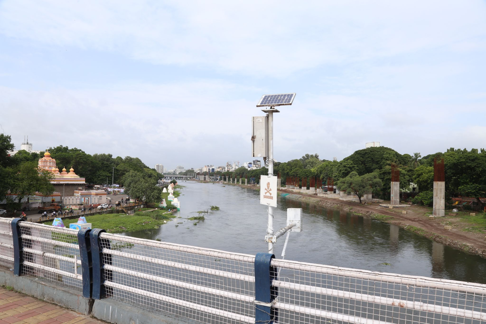
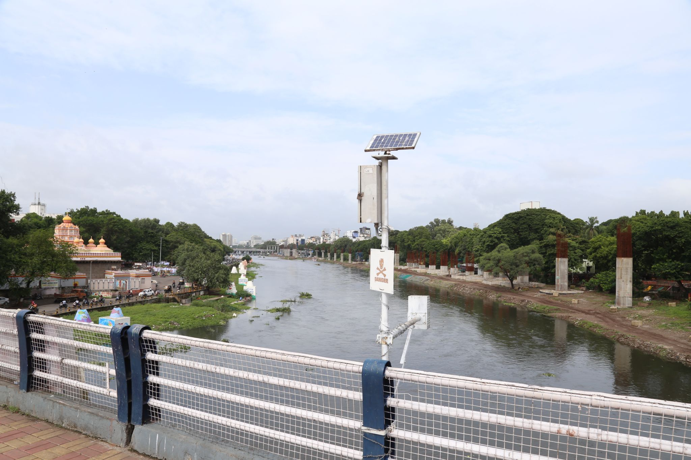

Deva Madala
Product Architect
Computer Science graduate from Ashoka University, currently a Product Architect at Amuse Labs, a leading digital platform for smart games. As an early member of the engineering team, I was instrumental in developing some core features for PuzzleMe. Our partners include renowned publications such as The L.A. Times, The Guardian, and The Atlantic, and have previously included The New Yorker and The Washington Post.
I earned the prestigious Best Undergraduate Thesis award for my research on Certificate Transparency using blockchain, which was subsequently published at IEEE ICDMW. Graduating magna cum laude in 2018, I also received the Academic Achievement award from the CS department.
Skills
Web & Native Apps
Primarily code in Java and TypeScript, but dabble in other languages as well.
Databases
Proficient with MySQL. I also work with SQLite, MongoDB, CouchDB
DevOps
GCP & Linode, Linux, Docker, server maintenance & monitoring
Blockchain
Worked with Hyperledger {Fabric, Composer}, Ethereum for research
Work


PuzzleMe
End-to-end platform for Smart Games such as Crosswords, Sudoku, Quiz, Wordsearch, Codeword, Jigsaw.

PuzzleMe: Apps
Native Apps (iOS, Android) to play Crosswords and Sudoku.

PuzzleMe: Multi-player
Feature to play puzzles with friends real time.

Hyperledger Summer Internship
X.509 Certificate Transparency using Hyperledger Fabric Blockchain.

Pune Smart City
City wide network of smart elements: WiFi, Sensors, Emergency systems etc.

Smart City Projects: Karnataka
Improving local governance through digital platforms.
Timeline
Amuse Labs
Full-stack development of PuzzleMe
Full-stack development of PuzzleMe – an online end-to-end platform for 'smart games'. Partners include The Washington Post, The New Yorker, The Atlantic, The Guardian, and more.
- Product Architect (2024 - Present)
- Technical Lead (2022 - 2024)
- Senior Software Engineer (2020 - 2022)
- Software Engineer (2018 - 2020)
Teaching Assistant
Ashoka University
Blockchain & Cryptocurrencies (Spring 2019), Computer Security & Privacy (Spring 2018), Probability & Statistics (Monsoon 2018)
Computer Science
Ashoka University
P.G. Diploma in Computer Science (2017-18), BSc. in Computer Science (2014-17). Graduated magna cum laude.
IB Diploma Programme
Johnson IB World School
Higher Level: Mathematics, Physics, Chemistry. Standard Level: Economics, French, English

 
